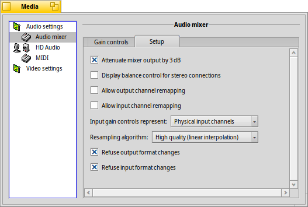

| Index |
|
Audio settings Audio mixer HD audio MIDI Video settings |
 Mídia
Mídia
| Deskbar: | ||
| Localização: | /boot/system/preferences/Media | |
| Definições: | ~/config/settings/Media/* ~/config/settings/System Audio Mixer ~/config/settings/MediaPrefs Settings - Armazena a posição da janela da caixa de diálogo. |
The Media preferences control the system's audio and video settings. Those range from everyday tasks like adjusting the volume, to quite low level tweaking that most users won't ever need. The various settings are grouped in categories.
 Audio settings
Audio settings

In case your computer is equipped with more that one audio interface, you can choose the , and which to use. In the rare case something derails audio/video in your system, try to .
With the checkmark you can . That adds a little icon to the Deskbar tray:

A left-click on the tray icon pops up a volume slider that controls the master output. Alternatively, using the mouse wheel directly on the icon also changes the volume. As you can see from the little Replicant handle at the bottom right, you can embed this slider, for example on the Desktop.
A right-click opens a menu with shortcuts to the , and to open the .
Audio mixer
The audio mixer allows you to control the volume of the different audio streams in the system, e.g. the audio output of currently running applications.

Here we see the master output, and the volume sliders of the currently running MediaPlayer and a game that's using SDL Audio. With those sliders you can mix their audio output so that, for example, the game sounds don't drown out your music coming from a MediaPlayer playlist.
The 'double-knobs' of the sliders represent left/right stereo. They normally move in unison, but you can control the balance by moving just one of them with the right mouse button.
Use the checkmark to a stream.
The tab provides mostly low level settings:
Among all these low level tweaking parameters — that you will likely only experiment with if Haiku doesn't quite support your audio hardware out of the box — there are a few setting you might be interested in.
| gives a little more headroom to avoid clipping. | ||
| adds a balance slider below the volume sliders on the tab instead of the 'double-knobs'. | ||
| opens new tabs to map one channel to one or more others and adjust their volumes. For example, you could assign the left output channel to front-left, rear-left and center and set different volumes. | ||
| has options for (low CPU usage and latency) and (slightly higher CPU usage and latency). |
HD audio (naming depends on the hardware)
Where the Audio mixer deals with the different audio streams running through Haiku, this controls the physical in/output.

There are three tabs:
| sets the and . | ||
| sets the output levels for speakers and headphones. | ||
| sets the input levels for line-in and microphone. |
It has to be said that these hardware level settings can appear a bit haphazard...
Haiku probes the hardware and tries to make sense of what it gets back. You may see various duplicate sliders with the same label etc. You'll have to experiment a bit to find the one you're looking for.
MIDI
The MIDI settings show all installed SoundFonts, i.e. instrument definitions. Just select the one you like. Double-clicking an entry opens its parent folder.

You'll find a few SoundFonts in HaikuDepot; those appear automatically after installation. SoundFonts downloaded from the web need to be manually moved to /boot/system/non-packaged/data/synth/ (or the equivalent Home hierarchy, see topic Filesystem layout).
Video settings

Depending on your hardware and driver support, you can select the and .
As with the audio settings, clicking might fix the odd hiccup.